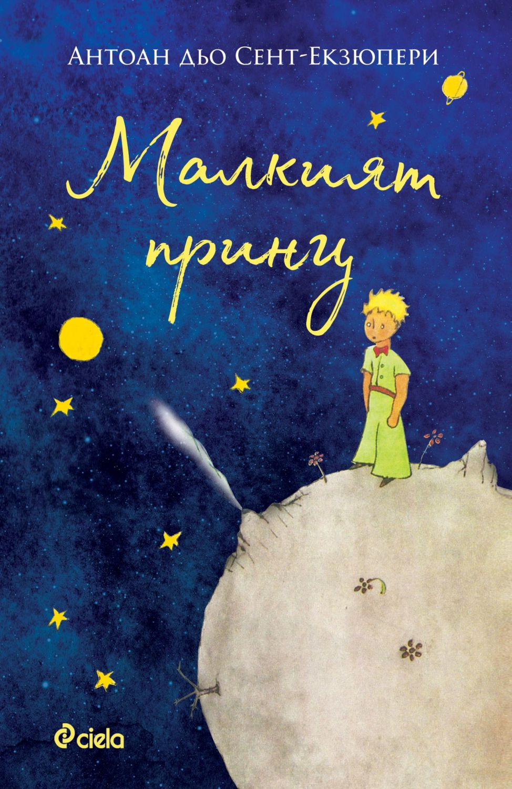
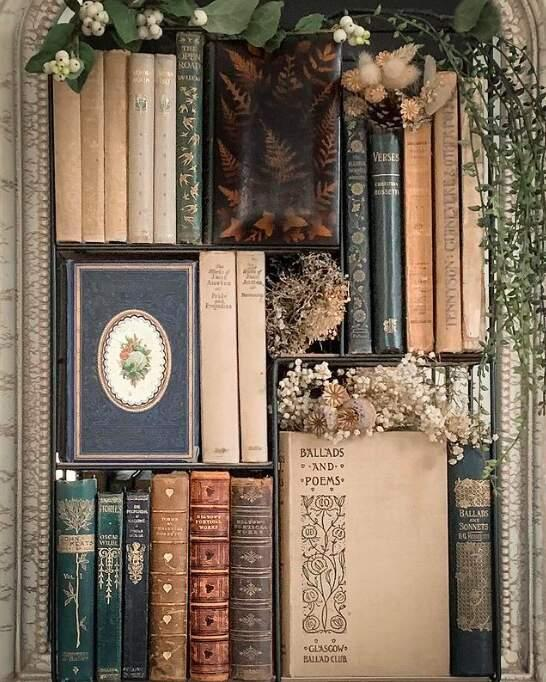
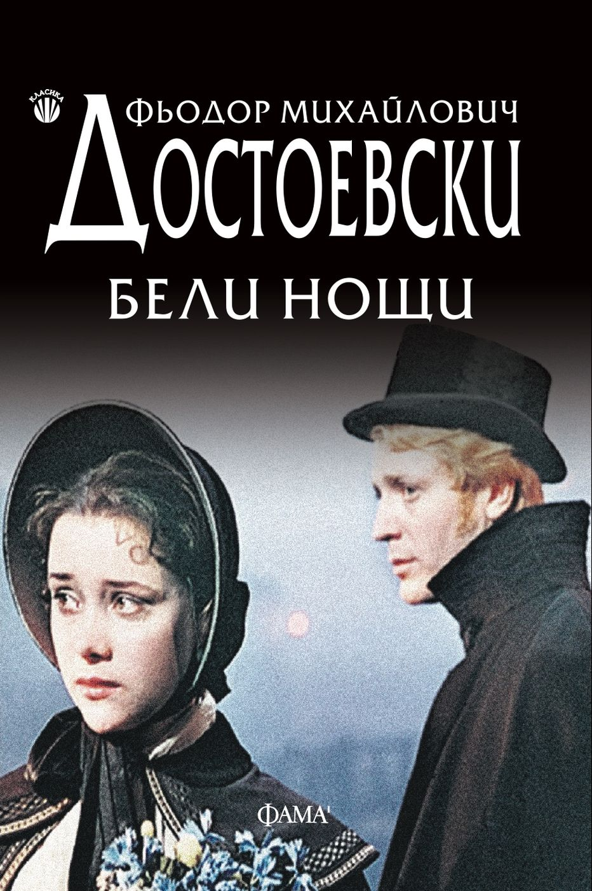
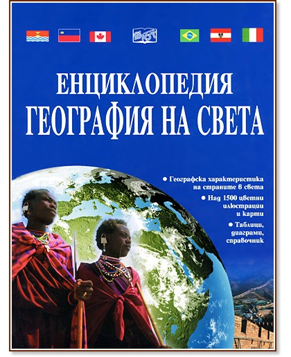
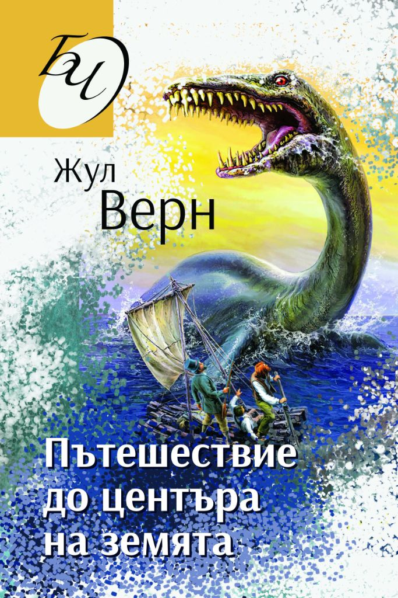
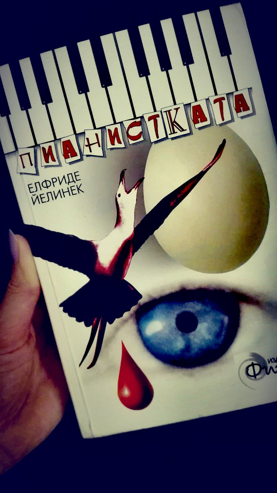
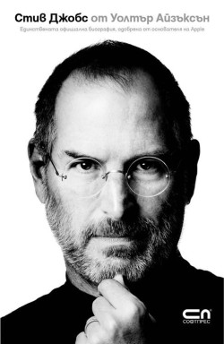

Глава I
Шест глави. Шест избрани книги. Един общ опит на ученици и учители — да разкажем какво ни вдъхновява: от словото до кода, от душата до звездите.

„Даскало" е тих опит да съберем под един покрив онова, което ни прави хора — словото, числото, изкуството, въпросите към звездите и кода, който пишем за утре.
Не претендираме за пълнота. Претендираме за честност, за внимание към детайла и за уважение към времето на читателя.
Натисни „Прочети повече" за пълния текст на главата






Образованието не е пълнене на съд, а запалване на огън. — Уилям Бътлър Йейтс
Кратко пътешествие през идеи, които ни оформиха
Откритието, че музиката и математиката говорят един и същ език — числото.
Първото място, в което въпросът се цени повече от отговора.
Знанието напуска манастирите и тръгва по пътищата на света.
Вселената получава своите закони — и хората смелост да ги четат.
Любопитството стига там, където преди стигаха само сънищата.
Пишем нов вид букви — и с тях нов вид светове.
Малък поклон към големите умове и сърца
„Свободата идва, когато спрем да очакваме от другите това, което можем да дадем сами на себе си."
„Запази правото си да мислиш — дори грешната мисъл е по-добра от никаква."
„Изкуството никога не се завършва — само се изоставя."
„Машината може да тъче алгебрични шарки тъй, както станът тъче цветя."
„Времето е в нас и ние сме във времето; то нас обръща и ние него обръщаме."
„Ние сме начинът, по който космосът опознава себе си."